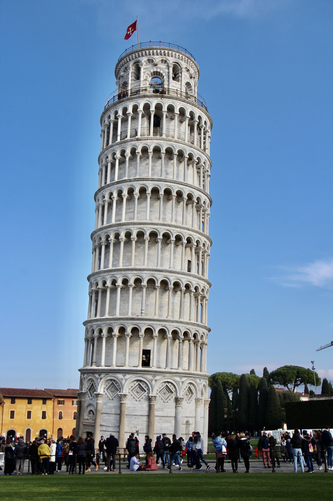
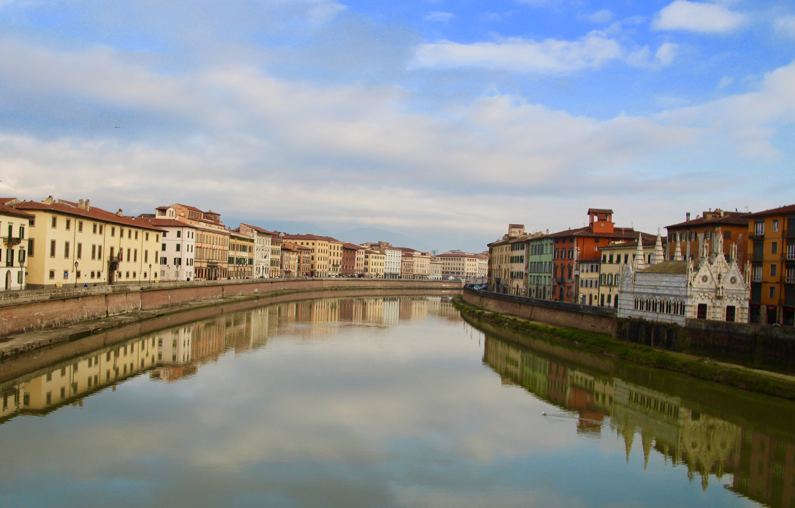
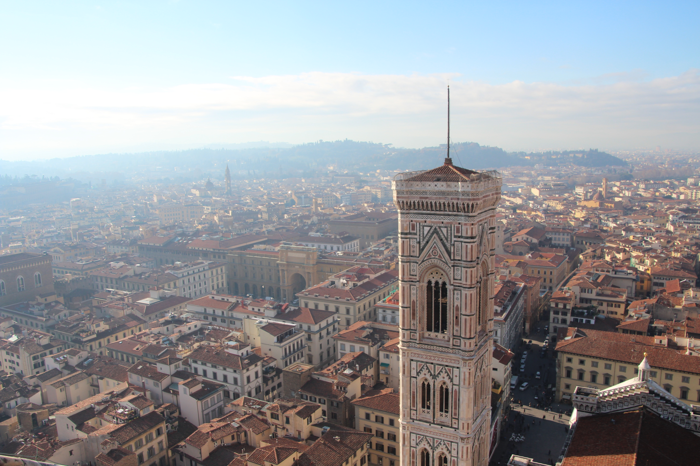
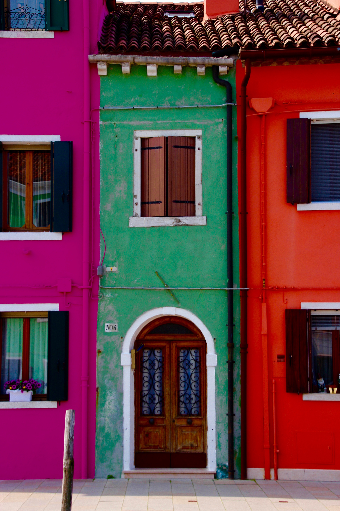
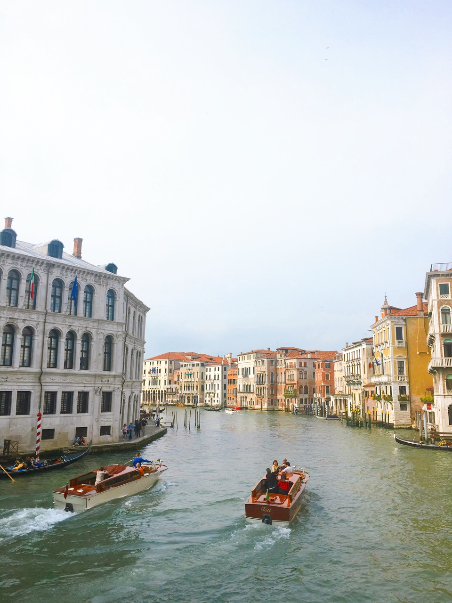

In the Spring of 2022, I studied abroad in London. So what do you think of when you hear London? Queen Elizabeth? The Royal Family? The London Bridge? Royal Guards? Here are some snapshots of London’s most timeless landmarks.
Big Ben
London Eye
Tower Bridge
Westminster Abbey
I had the opportunity to travel throughout Europe, visiting over ten countries and capturing amazing photographs along the way. These photographs capture the architectural and cultural beauty of Italy, France, London, Croatia, Greece, and more. Check out these places below:
Italy
The homes of Siena, Italy

The Leaning Tower of Pisa in Pisa, Italy

Arno River in Florence, Italy

The heart of Florence, the Duomo

The Colorful Island of Burano, Italy

Boats of Venice, Italy
Dubrovnik, Croatia
The streets of the Old Town
The Elaphite Islands
Kayaking along the Adriatic Sea
A panoramic view of the cliffs of Dubrovnik
Dubrovnik at night
Greece
The blue and white streets of Mykonos
Busy streets of Athens
The Old Town of Mykonos
Paris, France
Day and night at the Eiffel Tower
Behind the gates at the Palace of Versailles